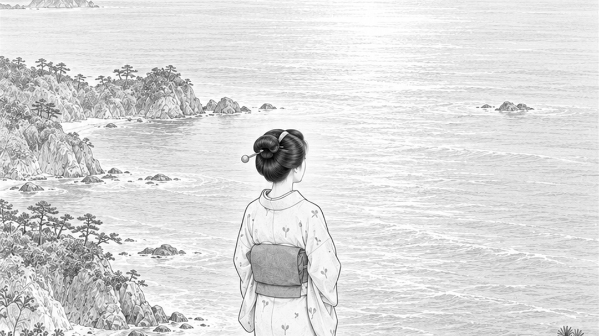

波じゃなく、海を見る。

どーも！とーるです！
発信や人間関係って、大きく2タイプあると思ってます。
①遠くから見ると魅力的だけど、近づくと十人中八人が離れていくタイプ（見せ方は上手いけど、性格とかでボロが出る）
②遠くから見ると地味だけど、近づくと評価が上がるタイプ（自分を見せるのは苦手だけど、思ってたよりすごい人だった、というリアクションがくる）
どっちがいい・悪いという話じゃないです。
でもこのタイプ、知っておくと戦略が少し変わります。
どちらかを選ぶものじゃなく、スタート地点
①と②って、白か黒かで選ぶものじゃないと思っています。
今自分がどこに立っているかというスタート地点だと思ってください。
例えば、
①で集客して、近づいたときにいろいろボロが出る。でも、場数を踏んで克服していく。
②で少ない母数だけど、コツコツ実績や評価を集めていき、それをオープンにしていく。
どちらも、結局は「場数」です。
だけどほとんどの方が、言葉や容姿だけでステレオタイプとして相手に近づき、後から「こんな人だとは思わなかった」となります。
SNSに当てはめると
これ、SNS発信でもよく見る話です。
魅せるのが得意な人が、マンツーマン（個別相談）をやるとコケるケース。
投稿やプロフィールでは魅力的に見えるのに、いざ1対1で話すと、思ってたのと違う。
チーム化すると崩れるケースも同じです。1人でやってるときは魅力的に見えても、スタッフが増えて組織になった瞬間、化けの皮が剥がれる。
逆に、見せるのが苦手だけど、個別相談まで持ってこれればほぼ勝ち、というタイプもいます。
投稿は地味だし、プロフィールも刺さらない。でも、実際に話すと「思ってたより全然いい人だった」となる。
どちらも、定義は同じです。
遠くからの見え方と、近づいたときの見え方が違うだけ。
たまに、「あたしは魅せるのも、マンツーマンも両方得意！大丈夫！」
って人、いますよね。
これ、2パターンあります。
コツコツ両方を補強しながら築いてきた人は、そもそも「両方いける」なんて言いません。
大抵は、シンプルにやばいやつです（笑）
こういうタイプは、遠くで見る分にはいいけど、結論、近づかない方がいいです。
相手が変わったように見えるけど、相手は変わってない
これ、面白いところです。
「こんなはずじゃなかった」「こういう人だとは思ってなかった」
そう思ったとき、心の中で「だから海を見ろって言ってんじゃん」とつぶやいてます。
たまに、「あの人変わってしまった」「あの人とつながってから変わってしまった」って言う人もいます。
でも、いや変わってないんです。
「思ってたのと違った」って、相手が変わったように感じるんですけど、
相手は変わってないんです。ただ、「あなた」の見るべきところの解釈が違っていただけ。
「海を見ろ」って言われてるのに、常に動いている近い距離の波ばかり見てる、みたいなものです。
波だけで判断しない
でもこれ、ノリで言ってるやつやないです。
海って、広いし何もないから、どこを見ればいいのか分からなくなるんですよね。
だから、人はつい、一番手前にある波だけを見て判断しちゃう。
でもそれでいいんです。
手前の波はこうだけど、奥の方は意外と静かなのかもしれない。
逆にもっと荒れているのかもしれない。
要は、足元に来た波だけで判断しないで、一歩引いて海全体を冷静に見てみる。
それだけのことなんです。
①タイプは、今の距離のまま見続けた方がいい
ここから、少し正直な話をします。
①タイプの人を「警戒しろ」とか「近づくな」と言いたいわけじゃありません。
ただ、そういう人は、今の距離のまま見続けるのが、一番安全だと思っています。
実際に近づいてみると、思っていたほどいい人じゃないことも、結構あると思います。
これ、相手を苦しめてもないし、否定してもいません。
ただ、「遠くから見えた魅力」だけで距離を縮めるのは、少し早いかもしれない、というだけの話です。
波だけで判断せず、海全体を見てからでも遅くない。
遠くからの印象だけで人を判断しない。
近づいたときの一番初めの波だけでも判断しない。
波じゃなく、海を見る。
発信も人間関係も、それで少し楽になると思います。
とーる｜猫好きの行動経済アナリスト